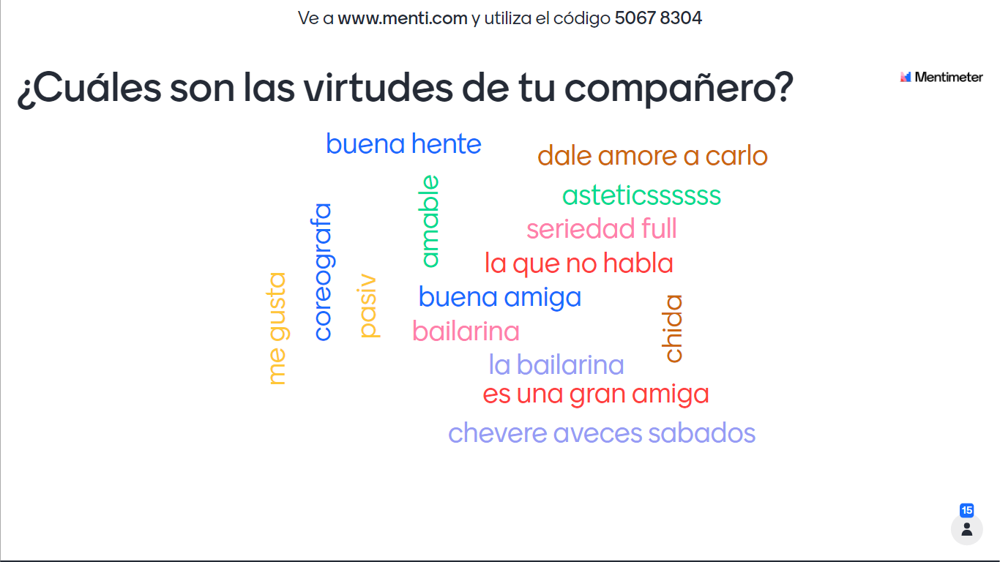

intro
¡¡¡MI PROYECTO DE VIDA!!!
by.Dahiana Mejía

Hii Mi nombre es Dahiana, me gusta el ANIME, la musica por lo general de muchos tipos, unos cuantos videojuegos, aunque tambien me gusta la bisuteria, hacer mis propios accesorios es una gran ventaja y a demas, crear una que otra manualidad ya sea un cuadro o dibujo o alguna otra cosita que me sirva de utilidad al menos como decoracion.
Soy una persona algo reservada pero siempre estoy dispuesta a lo que me de la mente, digo la mente porque paso mucho de mi tiempo dentro de ella, es entretenido analizar muchas cosas pero a la vez es peligroso adentrarse demasiado ya que me puedo perder a mi misma,
no hay muchas sosas que me enojan pero lo que si es cuando las personas critican en general y bueno no me acuerdo que mas Justo en mi boda fue (en nuestra boda fue) Todo estaba listo con un clima precioso esa vez (ninguna nube esa vez) Bruno con voz misteriosa habló (trueno) ¿Tú cuentas la historia o lo hago yo? (Lo siento, mi vida, hazlo tú) "Veo que pronto lloverá" (¿qué insinuaba?) Sabrás que lo tomé muy mal (abuela, ten las sombrillas) Boda en un huracán (fue un día feliz pero es verdad) No se habla de Bruno, no, no, no No se habla de Bruno (ey)
no hay muchas sosas que me enojan pero lo que si es cuando las personas critican en general y bueno no me acuerdo que mas Justo en mi boda fue (en nuestra boda fue) Todo estaba listo con un clima precioso esa vez (ninguna nube esa vez) Bruno con voz misteriosa habló (trueno) ¿Tú cuentas la historia o lo hago yo? (Lo siento, mi vida, hazlo tú) "Veo que pronto lloverá" (¿qué insinuaba?) Sabrás que lo tomé muy mal (abuela, ten las sombrillas) Boda en un huracán (fue un día feliz pero es verdad) No se habla de Bruno, no, no, no No se habla de Bruno (ey)
hay muchas cosas que me hacen unoco pero ahora no me acuerdo asi que bueno Justo en mi boda fue (en nuestra boda fue) Todo estaba listo con un clima precioso esa vez (ninguna nube esa vez) Bruno con voz misteriosa habló (trueno) ¿Tú cuentas la historia o lo hago yo? (Lo siento, mi vida, hazlo tú) "Veo que pronto lloverá" (¿qué insinuaba?) Sabrás que lo tomé muy mal (abuela, ten las sombrillas) Boda en un huracán (fue un día feliz pero es verdad) No se habla de Bruno, no, no, no No se habla de Bruno (ey)
